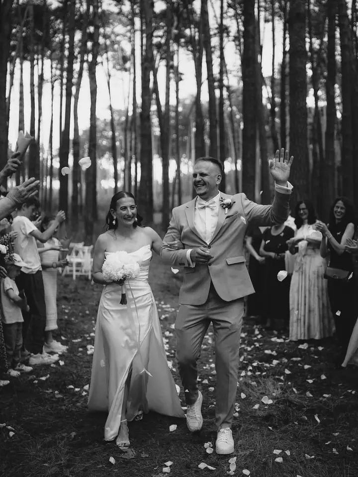
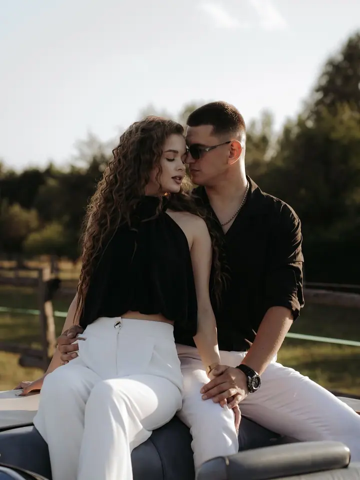

Svatby
Svatby fotím bez přetvářky a s citem, od příprav až po večerní procházku ve dvou. Na vás nechám, ať si den užijete, a postarám se, aby nechyběla ani sranda.

Svatební a lifestyle fotografka
Jmenuji se Maria Myňko, ale říkejte mi Masha. Fotím svatby, rodiny a portréty v Královéhradeckém a Pardubickém kraji. Bez přetvářky, s citem a pro vás.
Zeptat se na termín
Svatby fotím bez přetvářky a s citem, od příprav až po večerní procházku ve dvou. Na vás nechám, ať si den užijete, a postarám se, aby nechyběla ani sranda.
Rodinné focení venku i v ateliéru a křtiny, ke kterým se budete rádi vracet. Žádné strnulé pózy, hlavně vy, jak spolu doopravdy jste.
Klidné těhotenské focení v ateliéru nebo v přírodě. Pracuji se světlem a stínem, aby fotky byly jemné a zároveň výrazné.
Ahoj, jsem Masha, duše s foťákem a vášní pro opravdovost. Fotografii se věnuji už od malička a není to pro mě jen práce. Je to důležitá součást toho, kdo jsem.
Věřím, že jedna z nejdůležitějších věcí, které v životě máme, jsou naše vzpomínky. Proto fotím svatby, rodiny, těhotenství, křtiny i portréty tak, aby z fotek bylo cítit, jací opravdu jste.
Ke každému focení přistupuji zodpovědně a profesionálně, ale bez zbytečné strohosti. Samozřejmostí je příjemná, přátelská atmosféra a nebude chybět ani sranda. Fotím v přírodě, na zámcích i v ateliéru.
Napište mi přes formulář, e-mailem nebo zavolejte. Řekněte mi, o jaké focení máte zájem a jaký termín vás láká.
Probereme místo, náladu a všechno, co je pro vás důležité. Ať jde o svatbu, nebo focení v ateliéru, budete předem vědět, co vás čeká.
Na focení se můžete uvolnit. Postarám se o přátelskou atmosféru, povedu vás a nechám prostor i pro chvíle, které vzniknou samy.
Fotky pečlivě vyberu a upravím ve svém stylu a pošlu vám je v online galerii, ke které se můžete kdykoli vracet.
Nejčastěji v Hradci Králové, Pardubicích a okolí, tedy v Královéhradeckém a Pardubickém kraji. Fotím venku i v ateliéru, na dalším místě se rádi domluvíme.
Aktuální ceník najdete na mém webu mariamynko.cz. Když si nebudete jistí, co vybrat, napište mi a společně najdeme řešení.
Stačí vyplnit kontaktní formulář, napsat na mariaminko470@gmail.com nebo zavolat na +420 777 632 381. Termín vám potvrdím, jakmile se domluvíme na podrobnostech.
Vůbec ne. Většina lidí to tak má. Povedu vás, budeme si povídat a o legraci nebude nouze, takže na foťák brzy zapomenete.